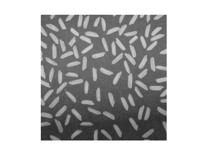
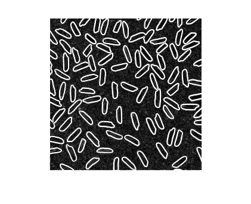
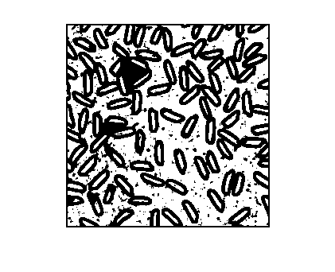
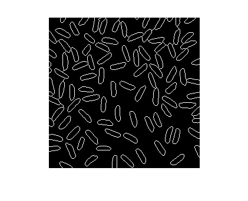
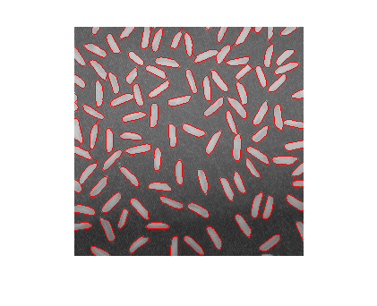

Contents
function varargout = demoWatSobel(varargin)
%DEMOWATSOBEL Segmentation by watershed on Sobel filtered rice image % demoWatSobel % % Example % demoWatSobel % % See also % imEdgeStrength, watershed % % ------ % Author: David Legland % e-mail: david.legland@grignon.inra.fr % Created: 2010-01-07, using Matlab 7.9.0.529 (R2009b) % Copyright 2010 INRA - Cepia Software Platform.
Base image
% read image img = imread('rice.png'); % show it imshow(img);
Edge enhancement
% use sobel filters edg = imEdgeStrength(img); % show result imshow(edg, [0 max(edg(:))]);
Filtering
% smooth edgf = imfilter(edg, ones(3,3)/9); figure(1); clf; imshow(edgf, [0 max(edgf(:))]); % compute extended minima emin = imextendedmin(edgf, 30, 4); figure(2); clf; imshow(emin);
Computation of watershed
% impose minima on image, then compute watershed imp = imimposemin(edgf, emin, 4); wat = watershed(imp, 4); % show resulting segmentation figure(1); clf; imshow(wat==0); % Show result superimposed on original image figure(2); clf; imshow(imoverlay(img, wat==0)); 